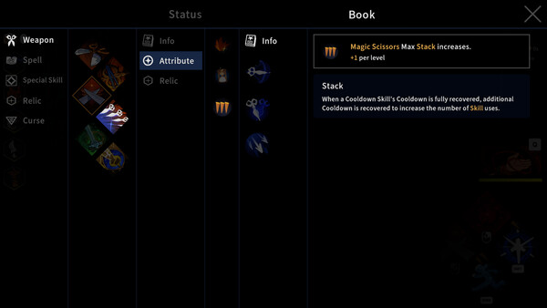

Scissors and Giant Scissors reward completing a full combo. Magic Scissors rewards charging and aiming. Broken Scissors rewards building Sharpness through repeated hits. Singing Scissors is officially named, but its current 1.0 mechanic still needs a reliable primary-source capture.

Scissors comparison
| Scissors | Confirmed 1.0 identity | Best fit | Evidence |
|---|---|---|---|
| Scissors | Unique attack at the end of a full combo | Players who can commit to a complete attack chain | Official 1.0 notes |
| Giant Scissors | Unique attack at the end of a full combo | Deliberate combo commitment | Official 1.0 notes |
| Magic Scissors | Charge piercing projectiles; post-first-gauge projectiles crit | Ranged aiming and charge timing | Official preview + launch notes |
| Broken Scissors | Hits gain Sharpness; 100% Sharpness makes attacks crit | Close-range continuous pressure | Official preview |
| Singing Scissors | Named current weapon; detailed mechanic not captured here | Do not choose from speculation | Name only |
How weapons unlock
Version 1.0 starts you with the default Scissors and limited Spells. Additional Scissors and Spells unlock as you progress through chapters and meet other conditions. After an item unlocks, select your Scissors, Spells and Special Skill in the Armory.
Choose the next guide
Quick answer
Choose Scissors by input rhythm before chasing a ranking: full combo for Scissors and Giant Scissors, aim-and-charge for Magic Scissors, repeated contact for Broken Scissors. Singing Scissors is confirmed as a current weapon, but this guide leaves its detailed mechanic to the live tooltip until a primary-source capture exists.
All five Scissors profiles
Scissors: balanced full-combo baseline
The default route teaches the version 1.0 combo rule: finishing the complete chain produces its unique attack. Use it to learn when an enemy opening lasts long enough for the finisher. Pair it with a Spell or Special Skill that creates that opening rather than one that asks you to abandon the chain.
Giant Scissors: deliberate combo commitment
Official notes place Giant Scissors in the full-combo family. Treat it as a commitment test: if the player repeatedly leaves before the unique ending attack, the weapon's defining condition is not being used. Prioritize space, control and a safe finishing window.
Magic Scissors: charged piercing range
Magic Scissors asks the player to aim, hold and release. Official material confirms piercing projectiles and the critical behavior after the first charge gauge. It fits a player who can create distance and line up more than one target. Pairing direction should protect charge time or reward the confirmed critical release.
Broken Scissors: Sharpness from contact
Broken Scissors gains Sharpness when attacks hit, and the official preview says full Sharpness makes attacks critical. It fits continuous close-range pressure. Choose movement, control and Spell interactions that help maintain contact rather than bonuses that only work while disengaged.
Singing Scissors: verify before publishing a mechanic
Singing Scissors is one of the five named routes. This page does not repeat another site's attack-speed or special-mechanic claims without official or reproducible 1.0 evidence. Open the unlocked weapon in the Armory, capture its current tooltip and use that wording as the starting point.
Unlock boundary
A new save begins with the default Scissors and limited Spells. Additional Scissors and Spells unlock through chapter progress and other conditions. The official material does not establish every exact unlock condition used by this page, so the correct action is to clear progress, return to Sil's House and check the Armory rather than follow an invented chapter table.
Wrong weapon symptoms
| What happens | Mismatch | Try instead |
|---|---|---|
| Combo finisher rarely appears | The player cannot hold the full chain safely | Create space with another skill or choose a shorter-feeling rhythm |
| Charged shots are constantly interrupted | Magic Scissors selected without spacing | Add movement/control or use a contact-based weapon |
| Sharpness never stabilizes | Broken Scissors selected while frequently disengaging | Use Rush/repositioning better or return to a combo route |
| Weapon feels strong only in one room type | The supporting Spell does not cover its weak matchup | Change the Spell, not every slot |
| A guide promises an unsupported Singing mechanic | No primary evidence | Read the current Armory tooltip and capture the version |
How to compare weapons
- Use the same chapter and difficulty.
- Keep Spells and the Special Skill fixed where possible.
- Run each Scissors long enough to perform its defining input correctly.
- Record sustained DPS, clear time, interruptions and damage taken.
- Choose the route with repeatable execution, not the largest isolated hit.
Sources and boundary
Pairing direction by weakness
A weapon guide should not prescribe one Spell for every run. Pair by the moment where the Scissors stops working. Full-combo routes need time and control for the finisher. Magic Scissors needs space and a release line. Broken Scissors needs approach and continued contact. The supporting slot should solve that weakness or connect through a confirmed trigger.
| Scissors family | Weak moment | Useful support direction | Misleading choice |
|---|---|---|---|
| Full combo | Enemy interrupts before the ending attack | Control, spacing or a safe engage | Another long commitment with no protection |
| Charged projectile | Threat reaches Sil during charge | Movement, control or shorter practical setup | A bonus that assumes every release reaches maximum charge |
| Sharpness contact | Target leaves melee range | Reconnect, pull or resource-preserving interaction | A distant condition that never helps regain contact |
| Unverified Singing route | Mechanic not established here | Read and capture the live tooltip first | Copying an unsupported number or cadence |
How to document an unlock
When a new Scissors appears, record the current save progress, the last completed chapter or Epilogue, the Armory screen and the full tooltip. One isolated unlock does not prove the only condition, so phrase the result carefully: the weapon was available after that state, not necessarily because of an invented single trigger.
For Singing Scissors, a useful capture includes the weapon name, full mechanic text, version number and an uncut demonstration of its defining input. Until that exists, this page preserves an explicit unknown. That is more useful to search engines and players than a confident paragraph built from another site's claim.
Five-step selection workflow
- Choose the input rhythm that feels executable.
- Perform the defining action against a stable target.
- Identify the moment the weapon becomes unsafe or stops producing value.
- Use Spell and Special Skill slots to cover that moment.
- Compare the result with the same encounter, not a different chapter.
Revisit the choice after new Armory unlocks, but change only one slot during the comparison. A new weapon may initially feel weak because its charge, combo or resource condition has not been learned.
Evidence checklist for a complete profile
A full weapon profile needs the current name, tooltip, defining input, observed range in a versioned capture, unlock state and at least one repeatable combat sample. Pairing advice should explain which weak moment it solves. A ranking needs controlled comparisons rather than different chapters or modifier states.
This standard is why Singing Scissors remains explicitly incomplete here. The missing mechanic becomes a research task, not an invitation to rewrite a competitor's unsupported number. When primary or reproducible evidence arrives, the page can add its cadence, role and troubleshooting without changing the evidence model.
For any newly unlocked Scissors, preserve the Armory screen, save progress and tooltip. State only that it was available after the recorded state unless multiple captures isolate the exact condition. That phrasing prevents one player's sequence from turning into a false universal unlock rule.
The selection rule
Use the default or Giant Scissors family when finishing a full combo feels reliable. Use Magic Scissors when aim and charge timing are reliable. Use Broken Scissors when repeated close contact is reliable. For Singing Scissors, inspect the live tooltip before making any role claim.
The best weapon is the one whose defining condition survives the player's real chapter pressure. Compare with the same supporting loadout and encounter so a Spell, random reward or difficulty change does not decide the result.
Recheck a weapon after the player learns its input. First impressions often measure unfamiliar timing rather than the Scissors itself, so keep the encounter and supporting slots fixed.
Frequently asked questions
How many Scissors are in Garden of Witches 1.0?
The official 1.0 materials name five routes: Scissors, Giant Scissors, Magic Scissors, Broken Scissors and Singing Scissors.
Which Scissors are best for beginners?
Start with the default Scissors to learn the full-combo finisher. Move to Broken Scissors for a resource-building crit loop or Magic Scissors for charging and aiming.